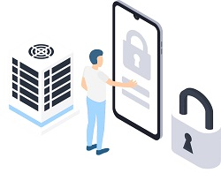

td>
The tech expertise that we bring to solve business problems covers:
Insider threat management and insider frauds investigation
Review of IT Policies, processes and procedures to improve efficiency
Review of controls/ audit in Forex and Treasury operations
Review of controls in Core Banking System (CBS) and other applications to improve integration
Review and redesign of reports in CBS and other applications
Please email us (info@truetech.asia) your needs and we will be glad to help you. A couple of instances where we have contributed is briefly described below.
information technology security
Why is comprehensive view of Information Security critical to organizations?
While reviewing the outsourced IT functions at a very large global engineering services corporate, information security was supposedly given due importance. To our utter surprise, it was found that all the admin level user info including passwords, IP addresses, and connection information were stored in an excel sheet. Even worse, the excel sheet was shared with many outsourced staff on laptops that were neither securely configured nor insured. The impact of the combined risks was then highlighted to the IT Top Management and corrective measures implemented forthwith.
Security begins at the top
td>
td>